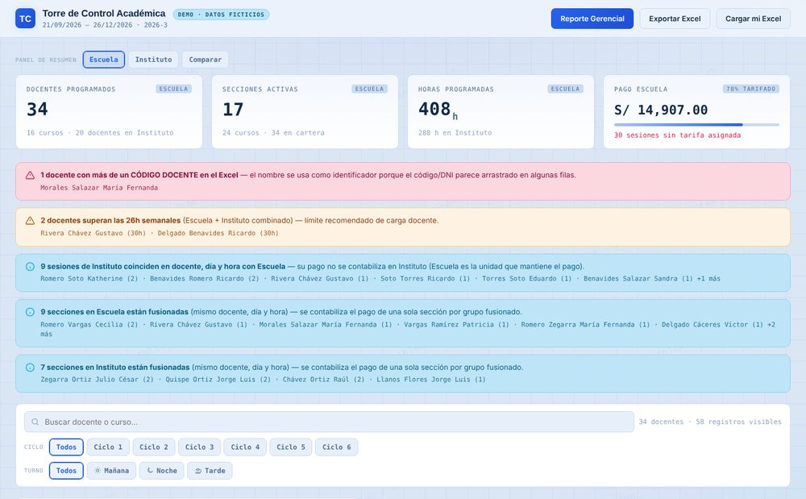

Torre de Control
El problema: saber cuánto se pagará a cada docente, corte por corte.
Lee el Excel de programación y calcula horas, secciones y pagos por docente, curso y sede.
- Detecta sobrecarga horaria y secciones fusionadas
- Proyecta el pago de cada corte hasta diciembre
- Genera el reporte gerencial en PDF y Excel